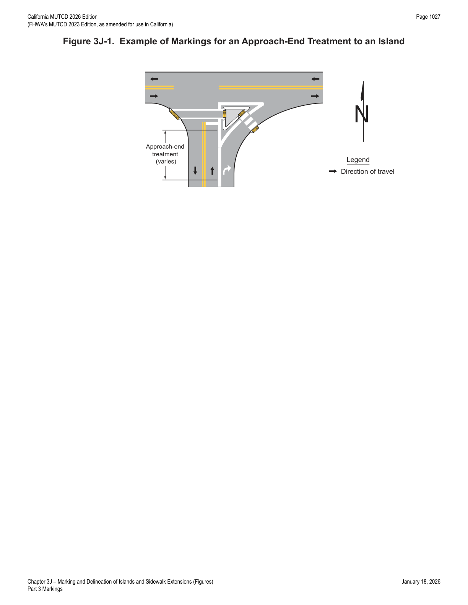
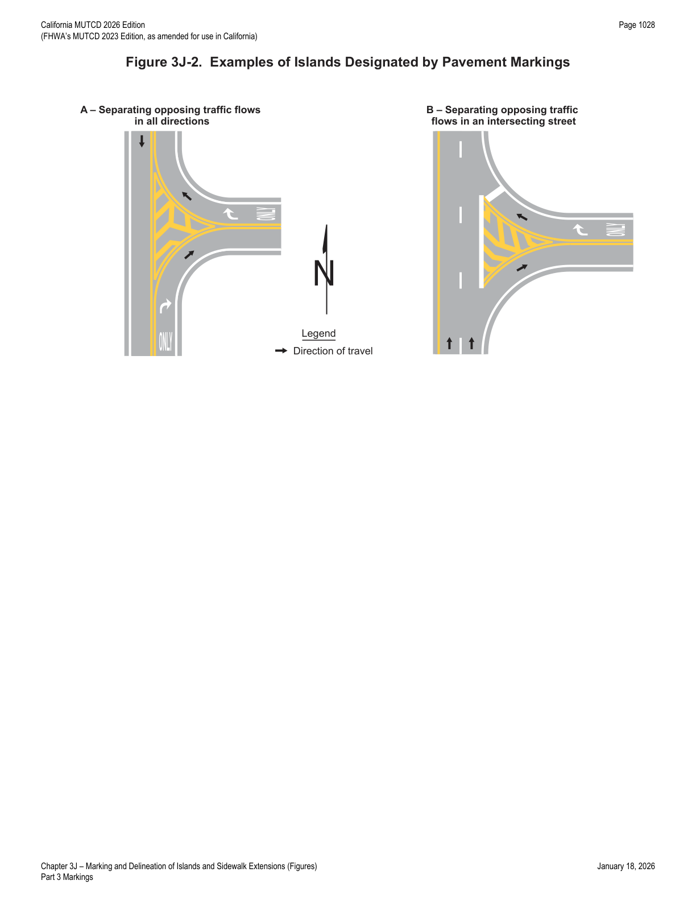
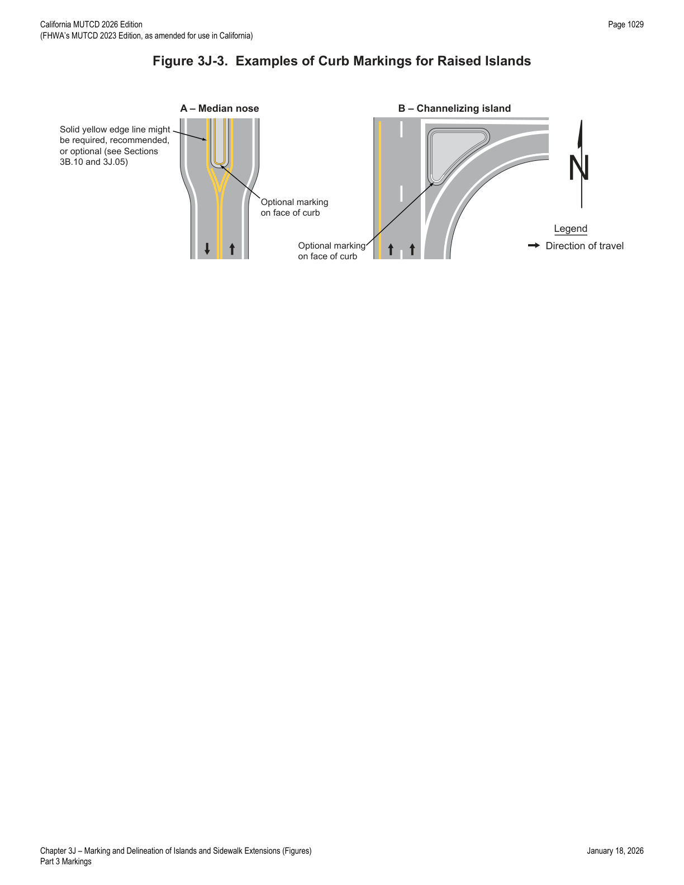
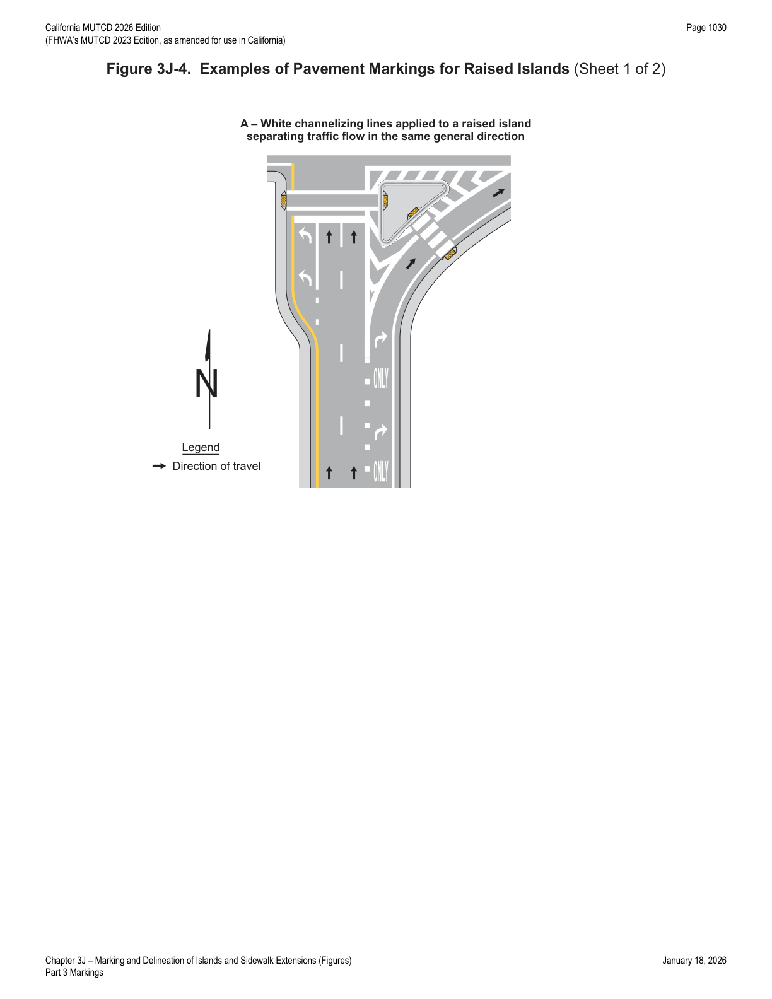
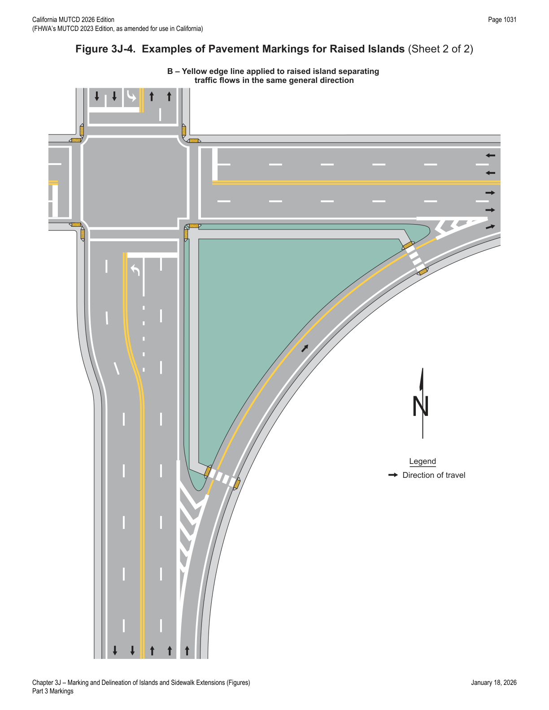
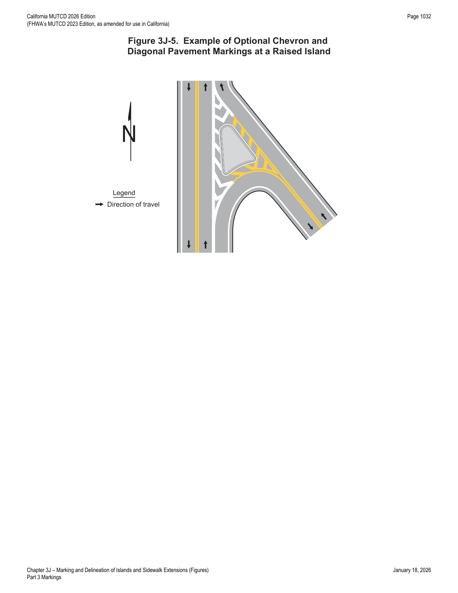
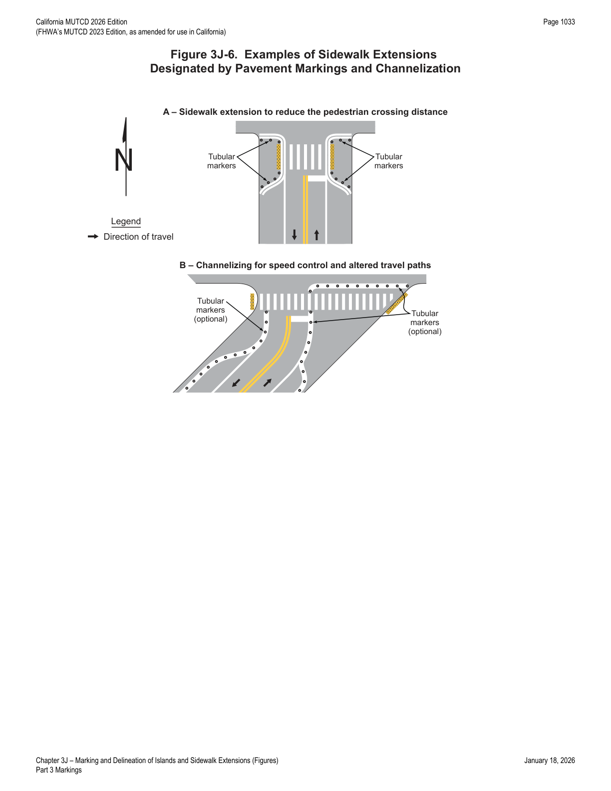

Part 3 · Markings · Chapter 3J
Marking and Delineation of Islands and Sidewalk Extensions
Standards and guidance for marking traffic islands and median islands (approach-end treatments, channelizing lines, curb markings, and delineation) and for designating sidewalk extensions, curb extensions, and bulb-outs using pavement markings.
3J.01General
- 01This Chapter addresses the marking and delineation of islands (see definition in Section 1C.02) and sidewalk extensions designated by pavement markings. Definitions, types, sizes, and other criteria for the design of islands are set forth in "A Policy on Geometric Design of Highways and Streets," 2018 Edition, AASHTO.
- 02Section 3C.12 contains information on pedestrian islands and medians.
- 03Sections 3H.04 and 3H.05 contain information on colored pavement that can be used within islands.
- 04An island may be designated by curbs, pavement edges, pavement markings, channelizing devices, or other devices.
- 05Raised channelization with sloping (mountable) curbed medians is used instead of channelization accomplished through the use of pavement markings (flush) for the following operating conditions: (A) left- and right-turn lane treatments at intersections on all roadways with operating speeds of less than 40 mph; (B) right-turn treatments on roadways with operating speeds equal to or greater than 40 mph.
- 06On State highways, criteria for the design of islands are set forth in Caltrans' Highway Design Manual. Refer to Section 1A.05 for information regarding this publication.
3J.02Approach-End Treatment
- 01An approach-end treatment to an island consists of longitudinal pavement markings and/or channelizing devices upstream of the island followed by a divergence of those pavement markings and/or channelizing devices, concluding with a transition to other pavement markings that demarcate or outline the island (see Figure 3J-1).
- 02Section 3B.13 contains information on pavement markings that function as approach-end treatments for obstructions.
- 03The ends of islands first approached by traffic should be marked with an approach-end treatment, curb markings (see Section 3J.04), or both, to guide vehicles into desired paths of travel along the island edge.
- 04When raised bars or buttons that project more than 1 inch above the pavement surface are used to create a rumble section in the neutral area, the raised bars or buttons should be marked with white or yellow retroreflective materials, as determined by the direction or directions of travel they separate.

3J.03Islands Designated by Pavement Markings
- 01Except as provided in Paragraph 2 of this Section, islands formed by pavement markings only shall be established using channelizing lines, and shall be white when separating traffic flows in the same general direction or yellow when separating opposing directions of traffic.
- 02If a continuous flush median island separating travel in opposite directions is used, two sets of double solid yellow lines shall be used to form the island (see Figure 3B-5). Other markings in the median island area, such as diagonal lines (see Section 3B.25), shall also be yellow, except crosswalk markings which shall be white (see Chapter 3C).
- 03If used, chevron or diagonal markings (see Section 3B.25) within the island shall be the same color as the channelizing line.
- 04Both chevron and diagonal markings of the same color may be used within the same island based on engineering judgment.
- 05The area within the flush island delineated by pavement markings may use colored pavement in accordance with the provisions of Chapter 3H.
- 06Figure 3J-2 illustrates examples of islands designated by pavement markings.

3J.04Curb Markings for Raised Islands
- 01Where curbs are marked for delineation or visibility purposes, the colors shall comply with the general principles of markings (see Section 3A.03).
- 02Retroreflective solid yellow curb markings should be placed on the approach ends of raised medians and curbs of islands that are located in the line of traffic flow where the curb serves to channel traffic to the right of the obstruction (see Figure 3J-3).
- 03Retroreflective solid white curb markings should be used when traffic is permitted to pass on either side of the island (see Figure 3J-3).
- 04The retroreflective area should be of sufficient length to denote the general alignment of the edge of the island along which vehicles travel, including the approach end, when viewed from the approach to the island.
- 05Where the curbs of the islands become parallel to the direction of traffic flow or where the island is illuminated or marked with delineators, curb markings may be discontinued based on engineering judgment or study.
- 06Curb markings at openings in a continuous median island may be omitted based on engineering judgment or study.

3J.05Pavement Markings for Raised Islands
- 01Pavement markings for raised islands include the approach-end treatment (see Section 3J.02), channelizing lines, edge lines, and chevron or diagonal markings.
- 02Solid yellow edge lines (see Sections 3B.09 and 3B.10) may be used adjacent to raised islands separating travel in opposite directions (see Drawing A in Figure 3J-3, as cited in the source text).
- 03Except as provided in Paragraphs 4 and 6 of this Section, raised islands separating traffic flows in the same general direction shall be outlined with white channelizing lines (see Drawing A in Figure 3J-4).
- 04Pavement markings for smaller raised islands may be omitted based on engineering judgment.
- 05Smaller raised islands without marked channelizing lines, edge lines, or chevron or diagonal markings should use curb markings (see Section 3J.04).
- 06Where traffic passes on the right of a raised island separating traffic flows in the same general direction, a yellow edge line should be used adjacent to raised islands of discernible size or length instead of continuing the white channelizing line from the approach-end treatment (see Drawing B in Figure 3J-4).
- 07Yellow edge lines adjacent to raised islands that separate traffic flows in the same general direction can be advantageous as a countermeasure for wrong-way entry or travel if the yellow edge line is of discernible length.
- 08Chevron markings may be used in neutral areas formed by diverging channelizing lines at raised islands separating traffic flows in the same general direction.
- 09Diagonal markings of an appropriate color may be used in buffer areas between the channelizing line and the raised island (see Figure 3J-5).
- 10Double solid 4 inch wide yellow lines shall be used to delineate the edge of a median island where the median is an all-paved, at-grade section of the highway. The island formed by double yellow lines shall be at least 2 feet in width, as shown in Figure 3A-107(CA).
- 11When used, other markings in the median island area shall be yellow.
- 12This treatment is not intended for freeways or other highways with a positive barrier in the median. Single solid yellow left edge line and markers as shown in Figure 3A-105(CA) are standard.
- 13The use of channelizing lines is shown in Figure 3A-112(CA) and no-passing markings are shown in Figures 3A-104(CA) and 3B-15.


Note: the source text's Paragraph 2 of Section 3J.05 cites "Drawing A in Figure 3J-3" for the opposite-direction yellow edge line case, but Figure 3J-3 is actually the curb-markings figure (median nose / channelizing island) and neither Drawing A nor B of Figure 3J-4 depicts an opposite-direction scenario — this appears to be a cross-reference error in the source document rather than an extraction artifact.

3J.06Island Delineation
- 01Delineators installed on islands shall be the same colors as the related channelizing or edge lines except that, when only facing wrong-way traffic, they shall be red (see Section 3G.03).
- 02Each roadway through an intersection shall be considered separately in positioning delineators to assure maximum effectiveness.
- 03Retroreflective or internally illuminated raised pavement markers of the appropriate color may be placed on the pavement in front of the curb and/or on the top of curbed approach ends of raised medians and curbs of islands, as a supplement to or as a substitute for retroreflective curb markings.
3J.07Sidewalk Extensions Designated by Pavement Markings
- 01Sidewalk extensions reclaim a portion of the roadway, sometimes including a portion of parking lanes, shoulders, and/or the traveled way, and repurpose that area for non-vehicular uses. They extend the sidewalk or other pedestrian space, shorten pedestrian crossing distances, alter the roadway geometry for speed management or channelizing, or serve other purposes.
- 02Sidewalk extensions, sometimes referred to as curb extensions, neckdowns, or bulb-outs, typically are created by physical infrastructure including concrete or asphalt to form a physical narrowing of the roadway with the finished surface at the same level as the adjoining sidewalk.
- 03Sidewalk extensions can also be designated by pavement markings for temporary or semi-permanent applications in which the finished surface is at the same level as the vehicular travel pavement. Where an adjoining curb and raised sidewalk are present, this type of application results in a multi-level sidewalk due to the difference in elevation between the adjoining pedestrian surfaces.
- 04Sidewalk extensions designated by pavement markings differ from other paved areas designated by pavement markings that are intended to be traversable by a vehicle for authorized or emergency purposes.
- 05Sidewalk extensions designated by pavement markings shall be established using double solid lines connecting to the outside physical curb or, in the absence of a curb, to the edge of the roadway. The color of the double solid line shall comply with the provisions of Section 3A.03.
- 06The paved area between the double solid line forming the sidewalk extension designated by pavement markings and the sidewalk or other roadside area is not part of the roadway. Sidewalk extensions designated by pavement markings formed by double solid lines are distinct from areas such as shoulders or gore areas where travel is discouraged by the presence of a single line, or flush medians where travel is prohibited by a double solid line. Sidewalk extensions designated by pavement markings with double solid lines designate areas outside the roadway where vehicle traversal is prohibited.
- 07Areas formed by a single wide line are sometimes used to alter the roadway geometry for speed management or channelizing, or to serve other purposes, where pedestrians are not expected (see Drawing B in Figure 3J-6). These areas are not considered a sidewalk extension, and provisions to delineate areas where vehicle traversal is discouraged include channelizing lines (see Section 3B.08), edge lines (see Section 3B.09), and diagonal markings (see Section 3B.25).
- 08Channelizing devices such as tubular markers (see Chapter 3I) should be used to provide conspicuity for, and to prevent vehicles from traversing, the area of the sidewalk extension designated by pavement markings. They should be located adjacent to the double solid line outside the traveled way.
- 09When selecting other methods of physical separation, the visual contrast from adjoining pavement and maximum separation distances are considerations so they are visible to pedestrians having limited vision and detectable by pedestrians who travel with a long cane.
- 10Sight lines and the visibility of road users within the sidewalk extension area are considerations when selecting methods of physical separation.
- 11The swept path of turning design or other prevailing vehicle types is a consideration, especially if a larger vehicle is expected to traverse a portion of the sidewalk extension while turning where pedestrians might be present.
- 12Crosswalk markings shall not be extended through sidewalk extensions designated by pavement markings.
- 13Accessibility provisions at sidewalk extensions designated by pavement markings are outside the scope of this Manual. State and local organizations providing support services to pedestrians with vision disabilities can provide advice to the traffic engineer on site-specific accessibility decisions. In addition, orientation and mobility specialists or similar staff can provide advice to inform such decisions. The U.S. Access Board (www.access-board.gov) provides technical assistance for making pedestrian facilities accessible to persons with disabilities.
- 14Traffic control devices that are critical to the specific conditions at the sidewalk extension, such as STOP or YIELD signs or Pedestrian Crossing signs, should be located within the sidewalk extension designated by pavement markings. Their lateral offset (see Section 2A.16) should be measured from the center of the double solid line designating a sidewalk extension rather than from the physical curb line behind the sidewalk extension area so that the signs are more visible to approaching traffic and not occluded by any physical features placed within the sidewalk extension area.
- 15The location of accessible pedestrian signals (see Section 4K.02) is a consideration when providing a sidewalk extension designated by pavement markings.
- 16Aesthetic surface treatments (see Chapter 3H) are sometimes used in sidewalk extensions designated by pavement markings to emphasize that the area is outside of the traveled way.
- 17In accordance with the provisions of Section 3H.03, aesthetic surface treatments, if used within a sidewalk extension designated by pavement markings, shall be non-retroreflective.
- 18Figure 3J-6 illustrates an example of a sidewalk extension designated by pavement markings and an example of channelizing.

In practice: the key distinction engineers rely on is that a sidewalk-extension double solid line prohibits vehicle traversal entirely (an area outside the roadway), while a single wide line only discourages traversal for speed management or channelizing purposes — the two are marked differently and are not interchangeable, and crosswalk markings must never be run through a pavement-marked sidewalk extension.
★ Key Takeaways — Chapter 3J
- Islands formed by pavement markings only are established with channelizing lines: white for same-direction traffic separation, yellow for opposing-direction separation; a continuous flush median island requires two sets of double solid yellow lines, and chevron/diagonal markings within an island must match the channelizing line color.
- Raised islands separating same-direction traffic flows must generally be outlined with white channelizing lines, except a yellow edge line should be used instead where traffic passes on the right of a raised island of discernible size (advantageous as a wrong-way-entry countermeasure); pavement markings for smaller raised islands may be omitted in favor of curb markings alone.
- A continuous at-grade paved median island must be delineated with double solid 4-inch-wide yellow lines forming an island at least 2 feet wide (Figure 3A-107(CA)); this treatment is not for freeways or highways with a positive median barrier, where a single solid yellow left edge line and markers (Figure 3A-105(CA)) is standard instead.
- Curb marking guidance: solid yellow retroreflective curb markings on approach ends of raised medians/islands that channel traffic to the right; solid white where traffic may pass on either side; markings may be discontinued where curbs run parallel to traffic flow, the island is illuminated/delineator-marked, or at continuous median openings.
- Delineators on islands must match the color of the related channelizing/edge line, except when facing only wrong-way traffic, in which case they must be red; each roadway through an intersection is positioned separately for maximum effectiveness.
- Sidewalk extensions (curb extensions/neckdowns/bulb-outs) designated by pavement markings must use double solid lines (color per Section 3A.03) connecting to the outside curb or roadway edge, designating an area outside the roadway where vehicle traversal is prohibited; a single wide line instead denotes an area only discouraging travel, not a sidewalk extension.
- Crosswalk markings shall never extend through a pavement-marked sidewalk extension; tubular markers should be used adjacent to the double solid line outside the traveled way for conspicuity, and any aesthetic surface treatment inside the extension must be non-retroreflective.
- Critical traffic control devices (STOP/YIELD/Pedestrian Crossing signs) located within a sidewalk extension should have their lateral offset measured from the center of the double solid line, not the physical curb behind it, to keep them visible to approaching traffic.